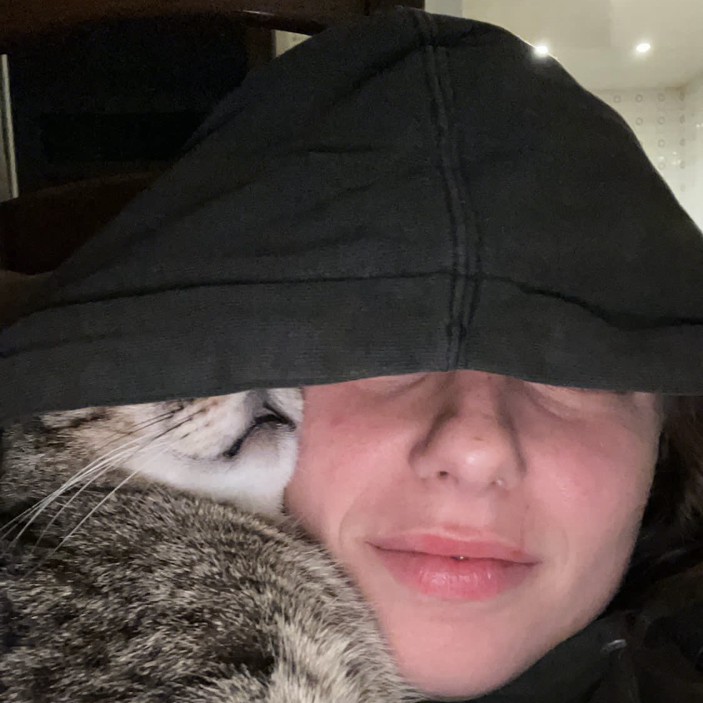
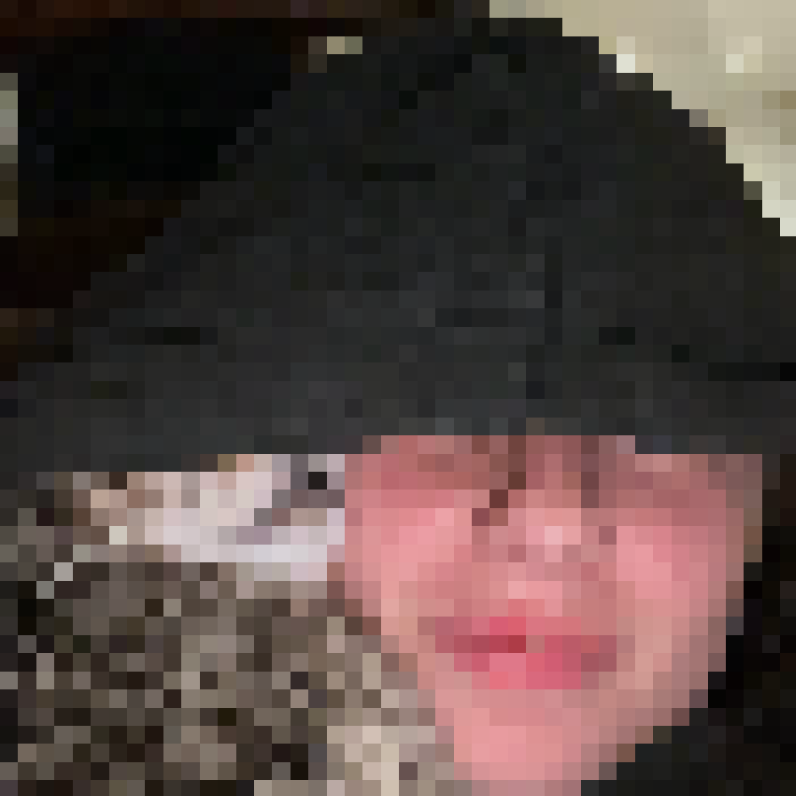
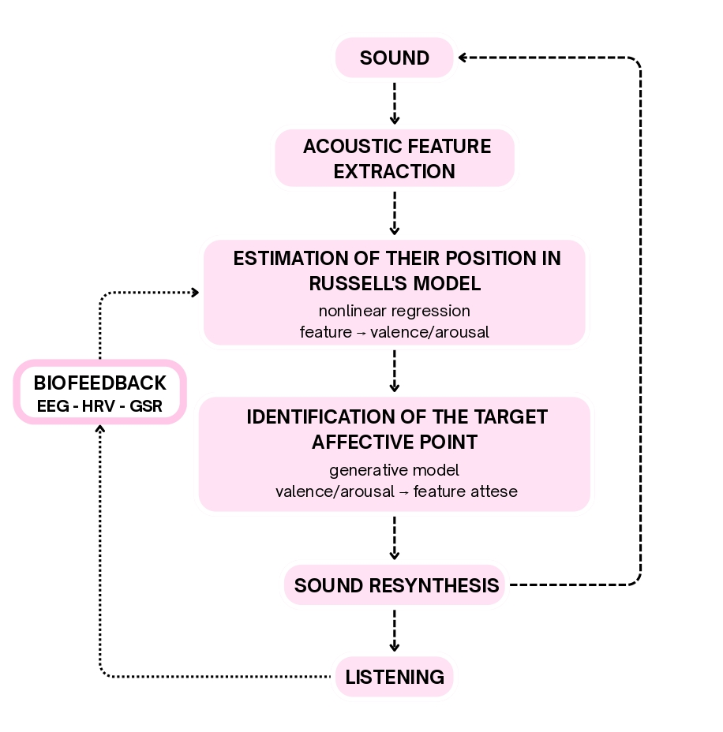
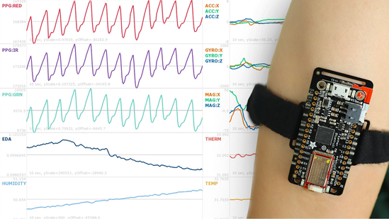
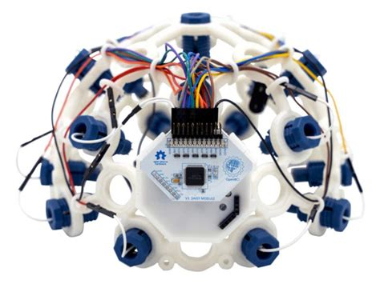

>>> code
>>> pseudo-code
Psychophysiological States as Compositional Material: Real-Time Sound Transformation for Affective Exploration in Non-Idiomatic Improvisation
Conservatorio G. Verdi, Como & MMT Creative Lab, Milano
This work explores how real-time sound transformation can influence the affective experience in the context of non-idiomatic musical improvisation. The research proposes using the valence–arousal spaceA model developed by psychologist James Russell in 1980 that describes emotions through two dimensions: valence (pleasantness) and arousal (activation). as a framework to guide the improvisational process, through the continuous transformation of sound to a desired affective point. The system analyzes in real time the acoustic characteristics of the sound produced by the performer, estimates its position within the affective space, and calculates a transformation toward a target affective point. The target therefore does not prescribe a musical or emotional outcome, but rather defines a direction to be explored through the continuous transformation of sound. The process, rather than the result, constitutes the main focus of the investigation. The approach is based on a practice-based perspective and connects research on affect, sound transformation, and improvisation practices. While the main output is performative, the system is intended to open, in the future, toward a therapeutic use as well.

Prototype: navigating the affective space
the real sound
a resynthesized sound, positioned according to its affective target
Technologies used:
Python (DSP, modeling) · Max/MSP (real-time synthesis) · EmotiBit (GSR, HR) · OpenBCI (EEG)


Topics I'm interested in:
This is a research in progress. The system, the questions, and the outputs are still taking shape. If you're working on anything related, or just want to share thoughts, please get in touch, I'm always happy to connect :)
Related:
SMALL AI: modelli locali come pratica di liuteria digitale — paper & talk at SPaMEC 2026, Napoli Elettronica, Conservatorio San Pietro a Majella, Napoli, May 2026. (forthcoming publication)